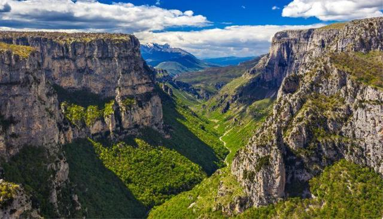
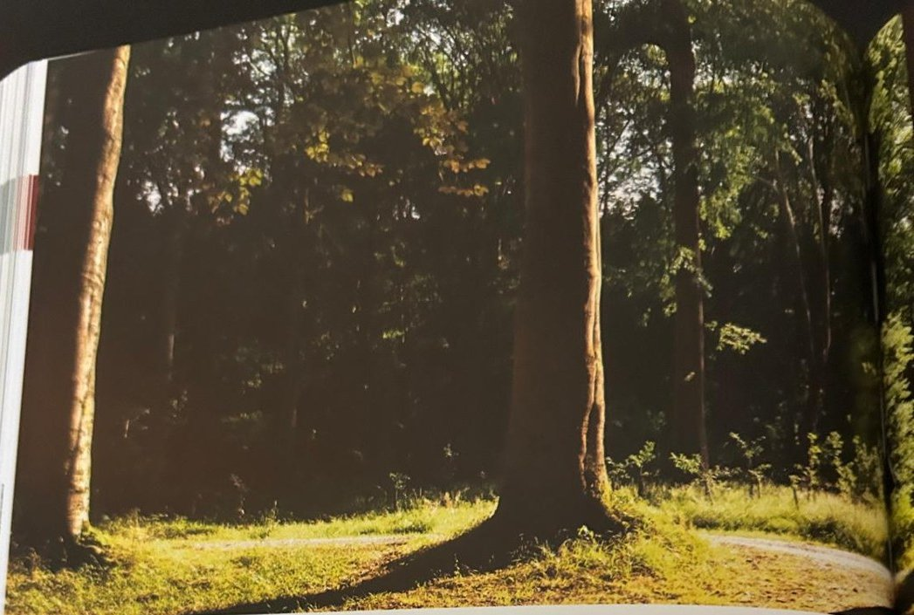

Groepen › Oude Wereld
27. Continentaal Griekenland, Pindosgebergte

Het Pindosgebergte op het Griekse vasteland, tussen de landstreken Epirus en Thessalia, kent een ruwer landklimaat en een groenere vegetatie dan de meer mediterraan getinte Peloponnesos op het schiereiland. De gemengde loofbossen op geringere hoogte tellen een bijzondere variatie aan eiken, waaronder meer gekende als Donzige eik, Hongaarse eik en Moseik, maar ook minder gekende als Dalechampi-eik en Trojaanse eik. Daarnaast ook Tamme kastanje, linde, haagbeuk, Veldesdoorn en Montpellieresdoorn en oostelijke tegenhangers van West-Europese soorten : Oosterse beuk, Oosterse haagbeuk, Oosterse hopbeuk, Tataarse esdoorn, Oosterse plataan. Hogerop mengt zich Griekse zilverspar en Koning-Boriszilverspar in het bos, de laatste is een natuurlijke hybride van de eerste met de Gewone zilverspar. Aan de boomgrens staat vaak Juniperusbos met Griekse en Stekelige jeneverbes. Op de zuidelijke Pindos en op de Peloponnesos staan Zwarte dennenbossen, het gaat hier om de ondersoort ‘palassiana’.
Uit het boek
2,06 ha · 21 soorten · 338 bomen
- Gemengd eikenbos (27A) met de oudste hopbeuk (1908), een bestand Griekse zilverspar (27B) en de koning Boris-zilverspar (27C).

Bron: Geografisch Arboretum Tervuren. Een wereldreis rond bomen (2020), p. 210 en volgende.
Deelgroepen
- 27 – Continentaal Griekenland
Soorten in deze groep (25)
- Pinus nigraZwarte den · 213 bomen
- Abies cephalonicaGriekse zilverspar · 96 bomen
- Platanus orientalisOosterse plataan · 29 bomen
- Acer campestreSpaanse aak · 25 bomen
- Amelanchier rotundifolia23 bomen
- Betula pubescensZachte berk · 20 bomen
- Quercus cerrisMoseik · 19 bomen
- Castanea sativaTamme kastanje · 18 bomen
- Sorbus ariaMeelbes · 15 bomen
- Euonymus europaeusWilde kardinaalsmuts · 8 bomen
- Aesculus hippocastanumWitte paardenkastanje · 6 bomen
- Fagus orientalisOosterse beuk · 6 bomen
- Quercus frainettoHongaarse eik · 6 bomen
- Abies albaGewone zilverspar · 5 bomen
- Acer platanoidesNoorse esdoorn · 3 bomen
- Acer tataricumTataarse esdoorn · 3 bomen
- Platanus x acerifoliaGewone plataan · 3 bomen
- Quercus cocciferaKermeseik · 3 bomen
- Vitex agnus-castus2 bomen
- Abies x borisii-regisKoning Boriszilverspar · 1 boom
- Acer pseudoplatanusGewone esdoorn · 1 boom
- Carpinus orientalisOosterse haagbeuk · 1 boom
- Ostrya carpinifoliaEuropese hopbeuk · 1 boom
- Quercus pubescensDonzige eik · 1 boom
- Quercus roburZomereik · 1 boom
Tekst en foto: arboretum-tervuren.be (Koninklijke Schenking), met toestemming gebruikt.